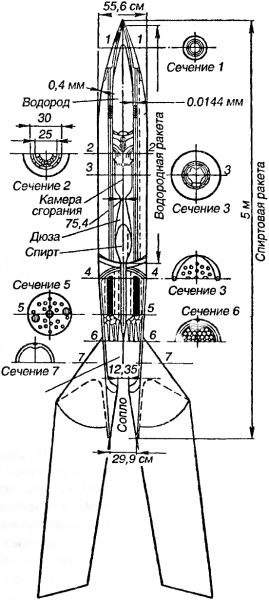
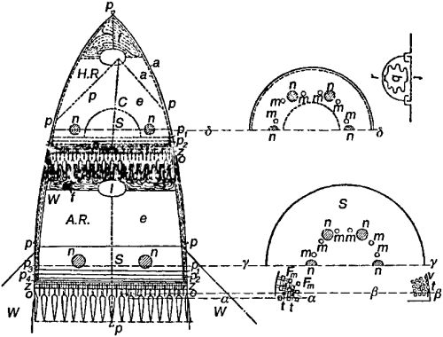

Ракеты Германа Оберта
В конце 1923 года издательство Ольденбурга в Мюнхене выпустило невзрачную на вид брошюру под названием «Ракета в межпланетное пространство». Автором ее был Герман Оберт. Предисловие к брошюре начиналось так:
«1. Современное состояние науки и технических знаний позволяет строить аппараты, которые могут подниматься за пределы земной атмосферы.
2. Дальнейшее усовершенствование этих аппаратов приведет к тому, что они будут развивать такие скорости, которые позволят им не падать обратно на Землю и даже преодолеть силу земного притяжения.
3. Эти аппараты можно будет строить таким образом, что они смогут нести людей.
4. В определенных условиях изготовление таких аппаратов может стать прибыльным делом.
В своей книге я хочу доказать эти четыре положения…»
Все эти положения, за исключением, пожалуй, последнего, были Обертом доказаны, но метод доказательства был понятен только математикам, астрономам и инженерам. Тем не менее книга Оберта распространилась очень широко; первое издание было распродано в весьма короткий срок, а заказы, посылавшиеся в издательство, почти покрыли тираж второго издания (1925 год) еще до его появления в свет.
Следующая книга Германа Оберта под названием «Пути осуществления космического полета» увидела свет в 1929 году. В ней немецкий ученый обобщил и скрупулезно проанализировал свои предыдущие и новые разработки в области ракетостроения.
Эти две книги стали основой для дальнейшего развития идей о межпланетных полетах как в Германии, так и в других странах Европы. В них, помимо общей теории ракетных двигателей, содержалось подробное описание трех типов ракет и проекта орбитальной станции.
Первый тип ракет, названный «Моделью В», служил носителями научных приборов для исследования верхних слоев атмосферы. Простейшая из «регистрирующих» ракет (сегодня их бы назвали «геофизическими») имела обтекаемый корпус из листовой меди. В верхнем отсеке ракеты помещался жидкий кислород, а под ним — горючее: бензин, бензол, спирт, нефть или жидкий водород. Кислород течет по специальной трубе, смешиваясь в камере сгорания с парами горючего, где происходит воспламенение смеси. Жидкое горючее через большое количество отверстий вбрызгивается в камеру сгорания. Образующиеся продукты горения через горло с дюзой вырываются наружу. Для автоматического нагнетания кислород находится под давлением от 18 до 21 атмосферы, горючее — от 20 до 23 атмосфер. Поэтому стенки баков должны быть прочными, а значит, тяжелыми. Подобная ракета, согласно расчетам самого Оберта, вряд ли могла подняться выше 100 километров.
Следующая «регистрирующая» ракета имела уже более сложную конструкцию. Она состояла из двух ракет: большой «спиртовой» и малой «водородной». Малая, помещаемая внутри большой, имела собственную дюзу и камеру сгорания. В качестве полезного груза она несла в себе регистрирующие приборы и парашют. Вокруг дюзы были установлены стабилизаторы, остающиеся в сложенном положении, пока работает большая ракета. Когда горючее в последней истощится, ее верхушка открывается, и под действием тяги собственного двигателя вылетает малая ракета.
Кроме того, Оберт предложил еще и третий вариант «регистрирующей» ракеты — представляющий собой модификацию двухступенчатого варианта, снабженную вспомогательной третьей ступенью, осуществляющую разгон на первом «стартовом» участке траектории.

Все три варианта «Модели В» должны были стартовать не с земли, а с высоты в 5500 метров над уровнем моря, куда их должны были поднимать два специальных дирижабля.
Стоимость «регистрирующей» ракеты, изготовленной по проекту «Модель В», Оберт оценивал в 10–20 тысяч «довоенных» немецких марок. Оценить сегодня, много это или мало, нам затруднительно, но сам ученый считал эту стоимость вполне приемлемой.
Разумеется, все эти модели «регистрирующих» ракет были представлена нерабочими эскизами и, вероятно, вообще не взлетели бы, вздумай кто-нибудь построить их в строгом соответствии с описанием.
Следующий приведенный в книге проект заслуживал куда большего внимания.
Космический корабль, получивший название «Модель Е», приобрел такую известность, что его аэродинамический профиль вплоть до середины 80-х годов чаще всего изображали художники, иллюстрирующие фантастические произведения о космических полетах. Благодаря этому корабль Германа Оберта стал неотъемлемой частью европейской культуры, и теперь даже школьники, рисуя в тетрадях эскизы ракет, представляют нам нечто, похожее на схему 1923 года. Кроме прочего, этот характерный профиль увековечен на медали имени Германа Оберта, присуждаемой немецким «Обществом по исследованию космоса» за фундаментальные исследования в области космонавтики.
Что же представляет собой «Модель Е»? Это ракета с одной большой дюзой и широким основанием, к которому прикреплены четыре опоры-стабилизатора. Она состоит из двух частей: первая разгонная ступень работает на спирте и жидком кислороде, а вторая при том же окислителе использовала жидкий водород. В верхней части второй ступени размещена каюта с иллюминаторами, позволяющими вести астрономические наблюдения, — Оберт называет ее «аквариумом для земных жителей». Входной люк расположен в самом носу ракеты, и в каюту можно попасть только по специальной вертикальной шахте, проходящей сквозь специальный отсек, в котором упакован тормозной парашют. Высота всей ракеты, рассчитанной на двух пассажиров, оценивается Обертом как «примерно соответствующая высоте четырехэтажного дома». Общий вес заправленной ракеты перед стартом — 288 тонн.

Чтобы преодолеть земное притяжение и сопротивление земной атмосферы, ракета Оберта, согласно его собственным расчетам, должна была лететь 332 секунды при ускорении 30 м/с . По истечении этого времени она достигнет высоты 1653 километров и скорости 9960 м/с.
Возвращение пассажирской кабины на Землю Оберт планировал осуществлять посредством парашюта либо при помощи специальных несущих поверхностей и хвостовых стабилизаторов, позволяющих реализовать планирующий спуск.
Оберт предсказывал, что при полете в межпланетном пространстве ракета будет неравномерно нагреваться солнечными лучами. Чтобы избежать чрезмерного перегрева пассажирской кабины, он предложил довольно необычное решение. Во-первых, он указал, что пассажирская кабина должна быть сделана из толстого листового алюминия без специальной теплоизоляции. Во-вторых, в этой кабине необходимо проделать как можно больше «окон», закрытых прозрачными кварцевыми пластинками. В-третьих, внешняя оболочка кабины должна быть окрашена таким образом, чтобы она хорошо отражала свет, а одна из сторон — обклеена черной бумагой или шелком. И наконец, в-четвертых, кабина должна быть отделена от ракеты (соединяясь с ней лишь электрической проводкой), а парашют и головной обтекатель раскрыты так, чтобы им можно было предать в пустоте любое положение. Внутри такой пассажирской кабины тепло должно было передаваться конвекцией воздуха по всем направлениям. Оберт собирался регулировать температуру в ней, обращая к Солнцу большую или меньшую часть «черной» или «светлой» поверхности, а также меняя взаимное положение элементов корабля (собственно водородная ракета, фрагменты обтекателя, кабина и парашют), убирая что-то в тень, а что-то выставляя под солнечные лучи.
Оберт предусмотрел и костюмы для безвоздушного пространства. По этому поводу он писал:
«На летящей ракете при выключенном двигателе опорное ускорение отсутствует и пассажиры могут в специальных костюмах выходить из пассажирской кабины и «парить» рядом с ракетой. Костюмы должны выдерживать внутреннее давление в 1 атмосферу. Мы бы предложили изготовлять их из тонкого отражающего листового металла по принципу современных глубоководных водолазных костюмов. Вместо рук мы бы сделали крюки, на ногах также полезно было бы иметь крюки, чтобы зацепляться за выступы ракеты, за ее канаты и за кольца, специально для этой цели вделанные в стенки ракеты.
Нам кажется непрактичным давать человеку, находящемуся вне ракеты, воздух через шланг из пассажирской кабины, целесообразнее подавать ему сжатый или жидкий воздух из специального баллона. Выдыхаемый воздух должен поступать во второй сосуд, который может растягиваться. Спиральные пружины поддерживают его при атмосферном давлении. Время от времени этот сосуд можно опорожнять, открывая краны, а возникающая при этом небольшая сила отдачи позволит человеку при свободном полете до некоторой степени управлять своими движениями.
Человек, вылезающий из камеры, должен быть обязательно привязан к ракете канатом. В этот канат могут быть вплетены также телефонные провода, так как безвоздушное пространство, как известно, не передает звук, а весьма желательно, чтобы человек, находящийся вне кабины, мог разговаривать с людьми в ракете.
<…> Чтобы человек мог вылезать из пассажирской кабины без большой потери воздуха, в камере должна быть труба, которую можно герметически закрывать с обеих сторон. Эта труба послужит также для входа в пассажирскую кабину перед стартом».
Помимо «Модели Е» немецкий ученый рассматривал еще один вариант двойной ракеты (ступень «спирт-кислород» и ступень «водород-кислород»), в которой для увеличения тяги вместо одной дюзы использовалось четыре. Эти дюзы должны были располагаться симметрично на корме космического корабля.
Кроме различных модификаций «Модели В» и «Модели Е», Герман Оберт довольно много страниц посвятил проекту так называемого «электрического космического корабля». В качестве движителя для своей версии электрического корабля Оберт планировал использовать «электрофорную машину». Речь здесь идет об особой разновидности паровых машин, которые приводятся в действие солнечным светом. В свою очередь эти паровые машины будут приводить в действие электрогенераторы, создающие направленный и сильный поток положительно заряженных частиц, преобразуемый в тягу. Поток может быть получен либо посредством солевого анода с противолежащей платиновой решеткой накаливания, либо посредством полого электрода, наполненного кислородом или парами натрия. Оберт указывает, что предпочтительнее все же использовать хлор, кислород, натрий и минеральные соли, так как их можно добывать из лунных пород или астероидов, делая там промежуточные остановки в ходе межпланетного путешествия.
Простейшая схема электрического космического корабля выглядит следующим образом. Пассажирская капсула космического корабля соединена изолированными кабелями с шестью двигателями. Пилот может произвольно менять положение двигателей относительно друг друга и кабины. На космическом корабле и на отдельных двигателях находятся по два электрода. Для создания в корабле искусственной силы тяжести к кабине также присоединены два «гравитационных отсека», то есть груза, закрепленных на длинных штангах и приведенных во вращение относительно одной из осей корабля.
Оберт также мечтал о том времени, когда межпланетные сообщения станут будничным делом, и тогда станет возможным собирать на основе электрофорных машин промежуточные «заправочные» станции. Посылая на большие расстояния «электрические лучи», подобные станции могли бы снабжать энергией небольшие ракетные самолеты весом в 10 тонн, снаряженные особым сетчатым каркасом, обтянутым металлической фольгой и улавливающим эти лучи. «Заправочные» электрические корабли можно было бы разместить на орбитах всех планет Солнечной системы, что еще упростило бы межпланетные сообщения, так как пассажирские ракеты более не нуждались бы в больших запасах топлива при космических полетах.